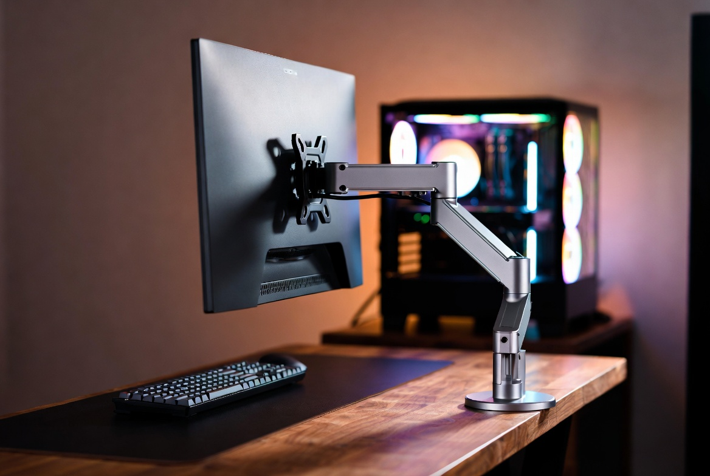
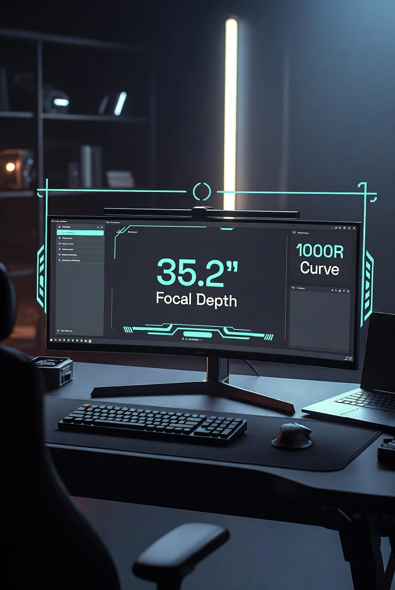

THE DEPTH DILEMMA: WHY YOUR DESK MIGHT BE TOO SHALLOW FOR A 49-INCH ULTRAWIDE
DEPLOYED: APRIL 2026 • SECTOR: ERGONOMICS
BY: J. MAC (LEAD BATTLESTATION ARCHITECT)
You unbox a 49-inch curved ultrawide, clear your desk, and slide it into position. Then it hits you: you are sitting way too close. The panel dominates your entire field of view, your neck is on a swivel tracking HUD elements in the corners, and somewhere in the back of your mind you can feel your optometrist drafting a sternly worded letter.
Width is rarely the problem—most desks comfortably span 48 to 60 inches. Depth is the silent killer. The standard office desk is 24 inches deep. Subtract 10 inches for the monitor's stand, and your eyes are less than 15 inches from a 4K furnace. This is not ergonomics. This is a tanning bed with a graphics card.
THE FOCAL POINT MATH
For a 1000R curve—the standard on the Samsung Odyssey G9 and most premium 49-inch panels—the focal point is exactly 1 meter (39 inches) from the center of the screen. That's the distance at which every pixel on the curve hits your retina at the same angle, eliminating the "pixel-scanning" neck fatigue that plagues shallow-desk setups.
On a 24-inch deep desk with a factory stand, your eyes land at roughly 14-16 inches. You are literally half the recommended distance. This is why ultrawide owners develop the telltale head-bob: constantly panning left and right because the screen exceeds their peripheral vision.
Dial It In: Use our Battlestation Ergonomic Calculator to compute your exact ideal viewing distance based on your panel size, curve radius, and desk depth. Stop guessing—the math doesn't lie.

A properly configured deep-desk setup hitting the 39-inch focal sweet spot for a 1000R ultrawide panel
THREE WAYS TO RECLAIM YOUR DEPTH
You have three paths, ranging from a simple arm swap to a full wall-mounted rebuild. Each approach solves the focal-length problem at a different budget tier. Pick the one that matches your setup—or stack them.
1. THE HEAVY-DUTY MONITOR ARM
The most surgical fix: replace the factory stand with an arm that lets you push the monitor past the rear edge of the desk. Most standard arms top out at 20 lbs and won't clear a 49-inch panel's footprint. You need something rated for 30+ lbs with extended rearward reach.
Ergotron HX Heavy-Duty Monitor Arm
Rated for 42 lbs with 13 inches of rearward extension. The gold standard for 49-inch ultrawide mounting—lets you push the screen completely past the desk edge.
Weight capacity: 42 lbs • Extension: 23.5" total • VESA: 100x100/75x75
2. THE DESK EXTENSION
If you cannot replace the desk itself—rental office, company-issued furniture, or simply a tabletop you love—a clamp-on desk extender adds 10-12 inches of depth for your keyboard and mouse tray. This pushes your seating position back by the same amount, effectively buying you the focal distance without touching the monitor or its stand.
It's not elegant, but it's effective. Combined with a monitor arm from Solution 1, you can reclaim nearly two feet of viewing distance without a single wall anchor.
Desk Extender Clamp-On Tray
Clamp-on extension adds up to 12 inches of depth for your keyboard and mouse. No drilling required—attaches to any desk up to 2 inches thick.
Depth added: 10-12" • Mount: C-clamp • Material: Engineered wood / steel bracket
3. WALL MOUNTING
The nuclear option. Remove the desk-mounted stand entirely, bolt an articulating bracket to the wall, and push the entire desk an additional 6 inches away from the wall. You gain depth on both sides of the equation: the monitor floats independently, and the desk moves back into the room.
This is the cleanest solution visually—zero footprint on the desk surface—but demands a stud-finder, a drill, and a willingness to commit. The payoff is unmatched: your entire desktop becomes usable real estate, and the focal distance becomes whatever you want it to be.
Full Motion Wall Mount Bracket
Articulating wall mount with 26 inches of extension and full tilt/swivel. Positions the monitor exactly where you need it without consuming a single square inch of desk surface.
Extension: 26" • Weight: 44 lbs • VESA: up to 400x400 • Stud spacing: 16-24"

A fully realized ergonomic setup: monitor arm for depth, cable management for cleanliness, and proper seating position
BEYOND DEPTH: COMPLETING THE BATTLESTATION
Once you have solved the focal-length problem, a few complementary pieces elevate the entire setup from "fixed the depth issue" to "this is the best desk I have ever sat at."
THE DISPLAY
If you are reading this before buying the monitor, two 49-inch panels dominate the market:
Samsung Odyssey G9 49" (1000R)
The reference design. 5120x1440 at 240Hz with a 1000R curve that demands—and rewards—a properly deep desk. Once your depth is dialed in, this panel is peerless.
Resolution: 5120x1440 • Refresh: 240Hz • Curve: 1000R • Focal point: 39"
THE FOUNDATION
If your depth dilemma revealed that your current desk is simply too small across every dimension, skip the extenders and go straight to a proper deep-desk platform.
Secretlab Magnus Pro XL
80 inches wide by 31.5 inches deep with an integrated power column and full-length magnetic cable tray. Built for the weight and depth demands of a full ultrawide battlestation.
Dimensions: 80" x 31.5" • Load: 264 lbs • Height range: 25.6"-49.2" • Integrated power
THE THRONE
Depth is a chain: desk depth dictates monitor distance, which dictates chair position. If you have pushed your seating position back to hit the 39-inch focal point, your chair needs to support that position with proper lumbar alignment and seat-pan depth adjustment.
Herman Miller Aeron Chair
The Aeron's adjustable seat depth and PostureFit SL lumbar support let you dial in exactly the seating position your new focal distance demands. Expensive, but amortized over the years you will spend sitting in it.
Size options: A/B/C • Seat depth: adjustable • Lumbar: PostureFit SL • Warranty: 12 years